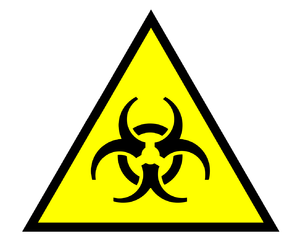

Golosina
 De: La Frikipedia, la enciclopedia extremadamente seria.
De: La Frikipedia, la enciclopedia extremadamente seria.
| De la serie alimentos y otras vainas:
|
|
|
| Nombre:
|
Golosinas
|
| Tipo de Comida:
|
Venenosas
|
| ¿Como se Come?
|
Con muchas ganas de morir
|
| ¿De donde Proviene?
|
Vienen de todo el mundo
|
| Ingrediente Basico:
|
No quieres saber
|
| Forma de Presentación
|
En forma de golosina
|
| Sabor:
|
Asqueroso
|
«¡¡¡Mis riñones!!!»
~ Tu Despues de comer golosinas y ser diagnosticado diabetico
«Son 99,999,999 dolares»
~ Tu dentista sobre lo que costara arreglar tus dientes
«Causan diabetes, cancer, efisema pulmonar, muerte prematura y dolor cronico... ¡¡pero saben bien!!»
~ Cualquiera sobre las golosinas
«la consumen niños gringos, para cagar bombas nucleares que las puede usar su gran ejercito para matar a osama bin laden y acabar con el terrorismo y asi poder celebrar con "GOLOSINAS"»
~ Un frikipedista sobre las golosinas
Las golosinas son ese invento comestible dulce, "bueno" y barato creado por el doctor IP anónima, dentista de profesión, para obtener mas clientes y aumentar en un 500% el indice de diabetes y obesidad en menores de 99 años; Es la droga que mas adiccion crea y desde mas temprana edad, se conocen casos de dependencia desde los 2 años de vida (no, no era yo).
Descripcion

Las golosinas causan esto
Se le llama golosinas a cualquier sustancia nociva "comestible" que tenga un PH superior a 115, sea radioactiva, toxica, inflamable, explosiva y/o pueda provocar cancer, SIDA, diabetes, infartos y lepra con el simple hecho de verla durante 0.00000000000002 segundos, se les reconoce por sus empaques de colores vistosos, por ser baratas y porque las venden en cualquier puto lugar, excepto donde vas a buscarlas cuando tienes necesidad de drogarte alimentarte, se cre que el unico lugar libre de ellas es golosilandia; para no ser reconocidas por los espias rusos y la FBI se disfrazan de distintas formas, olores, tamaños y colores, al grado de llegar a parecer platanos ninja.
Historia
 Si el empaque no tiene esto, no son golosinas
Un buen dia un grupo de cientificos estaban creando una nueva arma de destrucción masiva capaz de diezmar a todo el mundo, cuando mezclando ácido de batería con alcohol etílico surgio una nueva sustancia de aspecto comestible y olor agradable, despues el Pato Donald les compro su invento y los distribuyo a través de su mensajeria de ratas, hasta que se difundió por todo el mundo (y parte de España), esta nueva sustancia debido a su poder adictivo solo comparable con las hamburguesas del Me Engorda se expandió rápidamente entre los niños, provocando el surgimiento de Don Poliu, el dentista mas rico del mundo (Es tan rico que compro Rusia y se la vendio a Stanlin en 10 Leros).
Para intentar impedirles dominar el mundo desde hace 20 años un escudaron de élite de la CIA ha perseguido a las golosinas a través de todo el mundo, pero gracias a la proteccion del gobierno Coreano no han tenido exito y en la actualidad son paqueteron en el WaltMart para poder mantenerse.
Formas
Formas Famosas
- El Osito: Este es, sin duda, un clasico de clasicos, la golosina que
casi todo el mundo ha probado. Como su nombre indica tiene forma de osito, siempre con las patas como cristo en la cruz, se crean de diversos colorines (como casi todas las golosinas) los tienes recubiertosde picapica o no, si no te has comido uno de estas mejor tirate por la ventana, no se puede vivir con una infancia tan triste.
- El Remolino: Un remolino que provoca adiccion, antiguamente de fresa o de regaliz negro u rojo ahora los puedes en contrar de sabores y colores dispares como verde(manzana), amarillo(limon), naranja,negro(alquitrán).. pero siempre en forma de espiral.
- Cocacola: Otro clasico de los clasicos. Si no has probado esta gominola no se a que esperas, o eres un marginado social o te gusta naruto. Quien no ha estado media tarde chupando una cocacola de estas?ahora debido la gran adiccion a esta chucheria en concreto se han creado variantes de tamaño gigante para gente con el pene pequeño y canis.
- Bote de Picapica: Se vende en monodosis (no hay que abusar) ,hay gran cantidad de sabores y colores y la gracia esta en el agradable cosquilleo que produce en la lengua por su sabor acido, una vez lo has provado te enganchas,tambien existen otros formatos como las pajitas o pastillas compactas.
- Petacitas: Ya de por si el nombrecito trae cola, el principal atractivo de este producto de variedades como cocacola y fresa es que estallan en tu boca y son las preferidas del Tito MC
Otras Formas
- Palote: Un palo de algo similar a pasta de fresa, muy bueno, eso si, un poco caro... 25Pstas/20 c de Lero cuesta hoy por hoy, una niño de Madrid se pasaba el dia chupandolo en el colegio, actualmente se lo conoce con el sobrenombre de Carmen de Mairena.
- El Corazón: Habitualmente de melocoton, es un corazoncito de dos colores practicamente iguales y que ademas tiene el mismo sabor en las dos, el favorito de la abuelas.
- La Fresa: Es un clasico, pero no es tan famoso como los demas, es de fresa (se abre una pantalla como en la tele que pone APLAUSOS) los pijos las comen mucho en sus fotos.
- EL Plátano: Es dificil de comer, ya que hace falta calentarla 20 minutos a fuego lento, sabe bastante mal.
Deformidades
Las golosinas tambien tienen sus deformidades, aqui unos ejemplos.
- Bomba de Hiroshima: Es la golosina que tiene una deformidad fisica, como por ejemplo que es mas larga de lo normal, o demasiado corta, o tiene alguna que otra punta fuera del cuerpo.
- La Lisiada: Le falta una parte (se entiende de que es de una chucheria compuesta, como las cerezas.)
- Ladrones: Una deformidad que se da muchas veces con las chucherias LISIADAS, pero que en este caso, se unen las que solo tienen un cuerpo, se dices asi por que estan partidas por la mitad, o no hay lo que tendria que estar, y en ese momento piensas... LADRONES de mierda estos de la fabrica de chuches!!!
FAQ
- ¿Las golosinas hacen daño?
No, solo despedanzan tu organos internos mientras sufres de horribles dolores para que luego seas devorado por los buitres y usado como papel higiénico nada grave.
- ¿Las golosinas son adictivas?
No, solo nunca puedes dejar de comerlas Mhuahaha
- ¿Las golosinas hacen que no sepas usar un teclado?
dfvhndfbnbfdlnejkdfnvskjbfofhsdjklhafkufhisudgsduifgsdjgwdcf
¡¡Deja de joder con tu golosinas!!
¿Sabias que...
- ...λμνξοπρςστυφχψω es golosina en algun idioma no conocido?
- ... eso es Weegeeniano?
- ...Las golosinas tienen mas drogas que Mc Mierda?
- ...Comia golosinas mietras hacia el articulo?
- ...Ahora tengo diabetes y cancer?
- ...E=MC2?
- ...Gñap Gñap Gñap Gñap?
Autor(es):
- Frikiman
- Alex2610
- Guilfer
- Khazike Khashondo
- Fasgort
- Azulejos
- Frikih
- AlemanH
- Leesoyyo
- Comentaristainformal
Frikipedia 2005-2016, Licencia
GFDL 1.2 - Extraído por FrikiLeaks